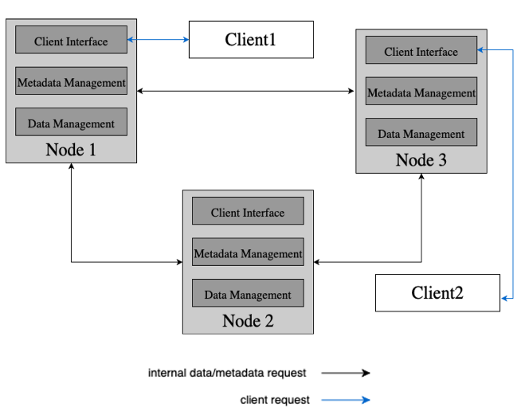

Teórica 07
Armazenamento
- Porque é que estes sistemas são importantes?
- Ter dados armazenados, pesistentes e disponíveis;
- Boa performance.
Tipos
Arquivo
- Cópias de coisas que tinha e que pretendo guardar;
- Precisam de ser muito rápidos em termos de débito (a latência é praticamente irrelevante);
- Padrão Sequencial;
- Padrões aleatórios causam lentidão.
- Geralmente, só se irão escrever estes dados uma única vez.
- Exemplo: Amazon Glacier (serviço na cloud).
Backup
- Precisam de ser muito rápidos em termos de débito;
- Padrão Sequencial;
- Em alguns casos, os dados podem ser atualizados;
- Os dados são atualizados através de diffs (muito leves);
- Em alguns casos, apenas os diffs são guardados entre backups da mesma fonte.
- Exemplo: Amazon S3 (serviço da cloud).
Armazenamento Primário
O armazenamento primário pode ser constituído não apenas pela RAM, como também por discos.
- Desejável que tenham grande débito e baixa latência;
- Grandes quantidades de dados podem ser escritos/lidos;
- Escritas/Leituras pequenas devem ser eficientes.
- Padrão Sequencial ou Aleatório;
- Os dados e os metadados apresentam uma grande carga de trabalho;
- Dados podem ser atualizados com frequência.
- Exemplo: Amazon EBS (serviço da cloud).
Meios de Armazenamento
- Tape;
- Armazenamento de Arquivo.
- HDD;
- Aramzenamento de Arquivo, Backup ou Primário.
- SSD (incluindo NVMe);
- Armazenamento Primário.
- Memória Persistente;
- Armazenamento Primário.
- RAM.
- Armazenamento Primário.
Interfaces de Armazenamento
-
Block Device;
- Interface mais próxima do disco;
- Os dados são geridos como blocos.
- Exemplos: iSCSI, Amazon EBS, Ceph, ...
-
Sistema de Ficheiros:
- Dados são geridos como uma hierarquia de ficheiros.
- Exemplos: Ext4, Lustre, Ceph, ...
-
Armazenamento por Objetos:
- Dados são geridos como objetos.
- Exemplos: Amazon S3, Openstack Swift, Ceph.
-
Muitas vezes, se uma aplicação está lenta pode ser devido à sua interação com o armazenamento.
-
O NFS é muito lento, mas muito utilizado na indústria.
- Só permite utilizar múltiplos dados num único servidor.
Scope
Local
- Block Devices do Sistema Operativo;
- Sistemas de Ficheiros do Sistema Operativo;
- Kernel vs User Space.

Remoto
- Block Devices de Rede;
- Sistemas de Ficheiros de Rede;
- Paradigma Cliente-Servidor.

Distribuído (Data Centers)
- Grande Escala (ou seja, infraestruturas na Cloud e HPC);
- Centenas a Milhares de Nodos;
- Churn Estável;
- Isto é, os nodos que entram e saem do sistema;
- Mas os nodos podem falhar.
- Não há um ponto único de falha.
- Dados distribuídos (replicados) entre nodos;
- Metadados, tipicamente, são geridos por outros nodos.
- Exemplos: HDFS, Ceph, Lustre, GPFS.

Altamente Distribuído (Peer-to-Peer)
- Muito grande escala;
- Milhares a milhões de nodos.
- Grande churn;
- Nodos falham e são substituídos com frequência.
- Não há um ponto único de falha.
- Dados e metadados distribuídos (replicados) entre nodos;
- Diferentes nodos podem interagir com a aplicação do utilizador.
- Exemplos: Napster, Gnutella, CFS, Farsite, DataFlasks.
